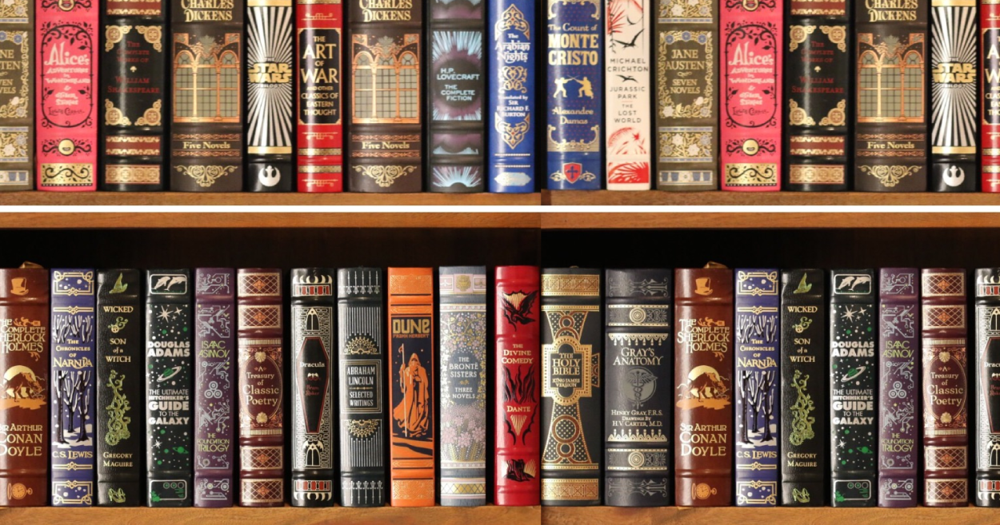

Desde de pequena sempre amei ler. Mergulhar no mundo imaginario para mim é puro deleite, felicidade e bem-estar.
| 1° | J.K Rowling |
| 2° | J.R.R. tolkien |
| 3° | Meg Cabot |
| 3° | Jane Austen |
| 4° | Stephen King |
| Quem manda ja morreu | Marcos Rey |
| O Misterio dos cinco estrelas | Marcos Rey |
| Harry Potter | J.K. Rowling |
| Saga crepusculo | Stephene Meyer |
Harry Potter e as reliquias da morte
Harry Potter e o enigma do principe
Harry Potter e a ordem da fenix
Harry Potter e o calice de fogo
Harry Potter e o prisoneiro de Azkaban
Harry Potter e a camera secreta
Harry Potter e a pedra filosofal